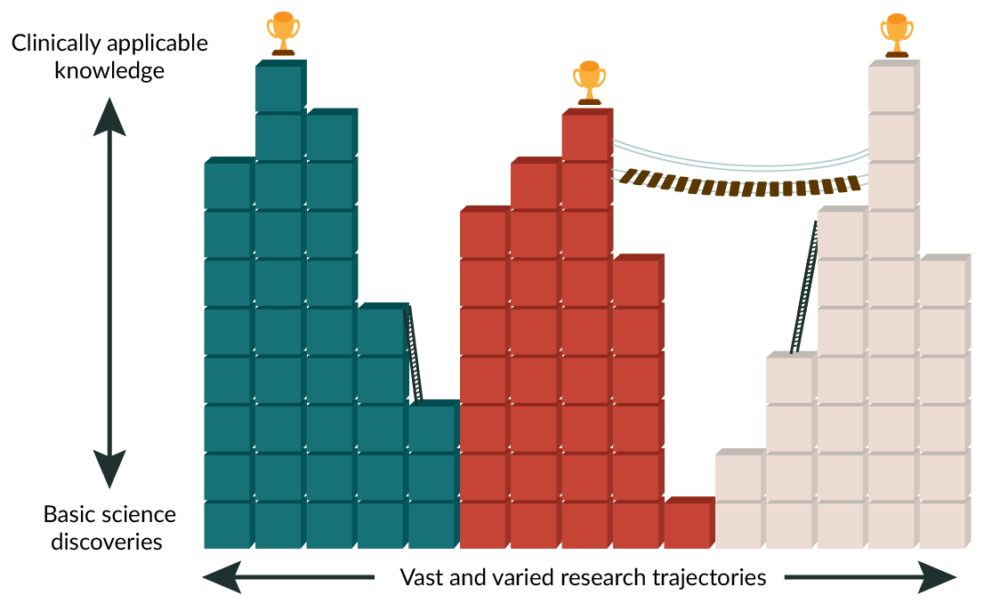
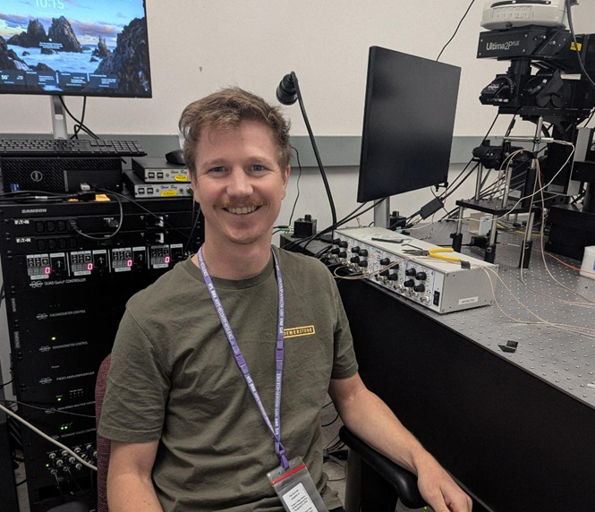

As a scientist, people often ask me how my research will benefit the public and when it might be turned into a treatment. This question comes up both when talking to my friends and family, and when applying for research grants. But most of my research is basic science so the answer is not simple. My research looks at how neurons in our brains process sounds. This is the first step to understanding a fundamental biological mechanism. The foundational knowledge can then take decades to build upon to reach patient care.
Medical research falls into three types: basic, translational and clinical. Basic science is usually done in labs. It generates new elemental knowledge to help us understand the foundational biology of how living systems work. Translational science bridges basic science and clinical applications. It often combines lab research with preclinical or early human studies. Clinical science takes place in patient care settings. It directly studies safety and efficacy of treatments for human diseases.
The timeline of progression from basic research to the clinic is difficult to pin down. The translation stage is often said to take 17 years, but the timeline of basic research and the jump from basic to translational is harder to count. Even the starting point of basic research is unclear. Does it begin when a new technique is developed? When a new cell type is discovered? When the function of that new cell type is discovered? When the changes in function of that cell type are revealed? Or only when a drug is first used to improve disease in an animal model? Each step takes years, the whole process may take decades, and the exact relevance to a disease is not always obvious at the start.
This example shows how science is not a simple straight path from basic to clinical. Instead, it is a series of building blocks, with each block getting us one step closer to treatments.

There also exists the feeling that science didn’t use to be this way, and that it has grown overcomplicated. Yet, this seems to exist due to a collective cultural amnesia for the timeline of scientific progress. How we are taught in school and how discoveries are reported in the media contribute to this by simplifying the scientific process.
One example of this is the story of the discovery of penicillin. People often remember the story of the discovery by Fleming in 1928 and quickly becoming widely available for World War 2. This simplified version of the story overlooks the research foundation that led to this discovery. In 1871 Sir John Scott Burdon-Sanderson showed that mold stopped bacteria from growing. In 1874 Joseph Lister found that urine contaminated with mold did not have bacteria growth. Then in 1875 John Tyndall showed that the Penicillium fungus inhibited bacterial growth by causing bacteria to burst. Most strikingly, in 1897 Ernest Duchesne showed that the Penicillium glaucum fungus could cure typhoid in guinea pigs. He thought that fungal and bacterial microbes may be fighting for survival. Then was the memorable discovery: in 1928 Alexander Fleming found that Penicillium notatum stopped bacteria growing in a petri dish. He thought that the fungus must be secreting a substance to kill the bacteria and named the substance “penicillin”. Fleming published his work, but he could not purify or stabilize penicillin. Effectively no progress was made for over a decade. In 1941 Howard Florey and Ernst Chain at Oxford successfully extracted and purified penicillin. They then went on to prove its potential as a life-saving antibiotic in mouse and human trials.
This example shows that science has always relied on previous building blocks. While this makes a less attractive story, it also shows that perhaps our modern scientific systems are more efficient. I’d like to hope that research like that of Ernest Duchesne would be less likely to slip through the cracks in the modern day.
It is also tempting to look back on science with the view that it should be easy to predict future uses. However, some of the best historical scientists prove this wrong. The physicist Heinrich Hertz discovered the existence of radio waves but had a dismissive view of their practical use. He built equipment to generate and detect radio waves and showed that they travel through space and reflect off objects. He dismissed this discovery as a simple scientific demonstration with no practical use. I guess we can’t blame him for not predicting we’d be using his invention to Bluetooth our music to our ears every day.
Often the greatest discoveries are deemed unimportant at the time of discovery. That we can never be sure of what will be scientifically important in the future means that we should support all science. Any medical research that builds solid blocks between our foundation and treatments is a step in the right direction. This holds true even if the subsequent steps are unclear given our current limited knowledge of the future. The question to ask of current science may not be “when will this produce a treatment?” but rather, “what future research could this stimulate?”. That shift in thinking might lead us to more creative and impactful science.
